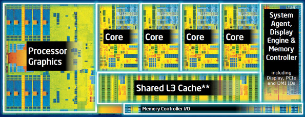
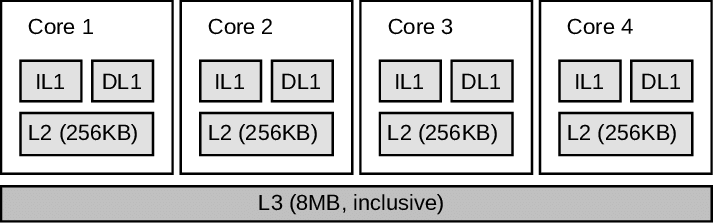

Low Latency Programming
David Gross
Walther Zwart
Optiver
About David
- MSc Computer Science UTC (France)
- 15+ years of programming
- 10+ years of C++
- 4+ years at Optiver
- https://github.com/david-grs
About Walther
- MSc Applied Physics
- 30+ years of programming
- 20+ years of C++
- 5+ years at Optiver
- https://github.com/wahez
About this workshop
- Process of improving latency
- Some useful tools — mostly Linux
- Actual C++ code
About Optiver
- Amsterdam, Sydney, Chicago, Shanghai
- 1986
- 440 people
- 45 nationalities
- Summer internship!
About Optiver
- Market Making
- Provide prices
- Improve the market
- Calculate the correct price
- Being faster than the competition
What is low latency programming
- It's not about throughput!
- Ability to quickly react to an event
- CPU-bound tasks, IO is outside of the scope
- It's all about time
There is no silver bullet...
- No compiler flags
- No kernel config option
- No library
...but there are golden rules
- Measure
- Do not optimize prematurely
- Know your problem
- Know your libraries
- Know your hardware
How fast is fast?

CPU architecture - Intel Haswell

CPU architecture - Intel Haswell

Steps
Identify the hot path
Algorithmic complexity
Allocations
Cache coherence
CPU instructions
Tools
- Google Benchmark
- Valgrind, callgrind & kcachegrind
- Papi++
- Perf
Google Benchmark
- Allows for easy creation of microbenchmarks
- https://github.com/google/benchmark
Valgrind, callgrind & kcachegrind
- Instrumentation framework
- Unix only
- Callgrind - profiler
- KCachegrind - GUI
Papi++
- Provides access to Hardware Performance Counters from within the program
- https://github.com/david-grs/papipp
Perf
- "The official" Linux profiler
- Has access to the same counters as PAPI
- Instruments running binary
- Produces nice reports
- And so much more!
Summary
- Always measure
- Keep an eye on algorithmic complexity
- Avoid allocations / synchronization
- Use cache efficiently
- Look into generated assembly
Links, resources, tools
- https://david-grs.github.io/low_latency_presentation/
- “When a Microsecond Is an Eternity", Carl Cook, CppCon 2017
- Papi++ : https://github.com/david-grs/papipp
- Google Benchmark
- valgrind --tool=callgrind, KCachegrind
- perf
- http://www.optiver.com